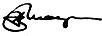
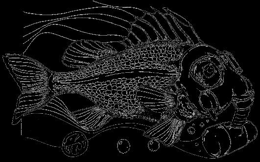

LAW OFFICES
HY MAYERSON
SUITE 1930
TWO PENN CENTER PLAZA
PHILADELPHIA. PENNA. 19102
MOTHER EARTH
P.O. Box 38
Madison, Ohio 44057
Gentlemen:
I am enclosing a copy of a letter sent out by the Chairman of the Congress Subcommittee. This should be effective to combat pollution. The problem is that not enough people know about it. The Government has proceeded several times under this statute and has enforced it and it has been ruled constitutional.
Ralph Nader recently appeared on the Dick Cavett show and urged the public to take advantage of this statute and seek its enforcement.
The most interesting part about this statute is that the fines, which are quite severe, are payable one half to the person who reports it.
It would be my suggestion that somebody that is interested in combating pollution, especially if that somebody is a freak and could use the money, might if they live near a large city rent a row boat and row down the river, with a polaroid camera and several empty bottles. They can then take pictures of themselves with a bottle being filled from a waste pipe disposal system. They should then advise the company by certified mail that they are in violation of this statute, that this pollution should cease immediately and that they are notifying the United States Attorney of this. From that point on, they should follow the other instructions given in the accompanying letter.
Very truly yours,
Hy Mayerson
TO: Citizens interested in preventing pollution and enhancing the quality of this Nation's waters through citizen action aiding enforcement of the 1899 Refuse Act.
Enclosed, pursuant to your request, are the following items:
1. House Report 91-917, issued March 18, 1970 by the House Committee on Government Operations entitled "Our Waters and Wetlands: How the Corps of Engineers Can Help Prevent Their Destruction and Pollution."
2. Outline-Enforcement of the 1899 Refuse Act through citizen action.
Persons who furnish information to the U.S. Attorney leading to the conviction of anyone violating the Refuse Act are entitled to half the fine. However, I, as well as many other citizens interested in preventing the degradation of our rivers, lakes and coastal waters, have directed that the money be sent to public agencies responsible for preventing water pollution. I urge you to do the same.
1. WHAT IS PROHIBITED AND WHERE-The 1899 Refuse Act is a powerful, but little used, weapon in the Federal arsenal of water pollution control enforcement legislation. Section 13 of the Act (Title 33, United States Code, section 407) prohibits ANYONE, including any individual, corporation, municipality, or group, from throwing, discharging, or depositing any refuse matter of any kind or any type from a vessel or from a shoe-eased building, structure, or facility into either (a) the nation's navigable rivers, lakes, streams, and other navigable bodies of water, or (b) any tributary to such waters, unless he has first obtained a permit to do so. Navigable water includes water sufficient to float a boat or log at high water. This section of the Act applies to inland waters, coastal waters, and waters that flow across the boundaries of the United States and Canada and Mexico.
The term "refuse" has been broadly defined by the Supreme Court to include solids, chemicals, oils and other liquid pollutants. The only materials excepted from this general prohibition are those flowing from streets, such as from storm sewers, and from municipal sewers, which pass into the waterway in liquid form.
In addition, the section prohibits anyone from placing on the bank of any navigable waterway, or of any tributary to such waterway, any material that could be washed into waterways by ordinary or high water, or by storms or floods, or otherwise and would result in the obstruction of navigation.
2. PERMITS TO DISCHARGE-Section 13 of the Act authorizes the Secretary of the Army, acting through the Corps of Engineers, to permit the deposit of material into navigable waters under conditions prescribed by him. Regulations governing the issuance of permits are published in Title 33 of the Code of Federal Regulations, Part 209.
3. PENALTY FOR VIOLATIONS-Violations of the Refuse Act are subject to criminal prosecution and penalties of a fine of not more than $2,500 nor less than $500 for each day or instance of violation, or imprisonment for not less than 30 days nor more than 1 year, or both a fine and imprisonment (Title 33, United States Code, Section 411). A citizen who informs the appropriate United States attorney about a violation and gives sufficient information to lead to conviction is entitled to one-half of the fine set by the court. (See section 5 of this outline.)
4. PROCEDURE FOR CITIZEN TO SEEK ENFORCEMENT OF REFUSE ACT-A. The citizen having information about any discharge of refuse into navigable waters should first ascertain whether the discharge is authorized by Corps permit. If a permit is in effect, the citizen should endeavor to ascertain whether the permittee is complying with its terms. This information can be obtained from the appropriate office of the Corps of Engineers with jurisdiction over the particular waters into which the discharge occurs. Such information is available to the public under the Freedom of Information Act (5 U.S. Code 552; Public Law 90-23). B. The Refuse Act specifically directs that the appropriate United States attorney shall "vigorously prosecute all offenders." (Title 33, United States Code, section 413.) In order to do so he needs adequate information to prove that the discharges were made and that they violated the law or the conditions of the permit. Furthermore, the statute specifies that the citizen's right to one-half of the fine is conditioned on his providing to the U.S. Attorney information sufficient to LEAD TO A CONVICTION OF THE VIOLATOR.
In providing information to the U.S. Attorney, the citizen should make a detailed statement, sworn to before a notary or other officer authorized to administer oaths, setting forth:
(a) the nature of the refuse material discharged;
(b) the source and method of discharge;
(c) the location, name, and address of the persons causing or contributing to the discharge;
(d) the name of the waterway into which the discharge occurred;
(e) each date on which the discharge occurred;
(f) the names and addresses of all persons known to you, including yourself, who saw or knows about the discharges and could testify about them if necessary;
(g) a statement that the discharge is not authorized by Corps permit, or, if a permit was granted, state facts showing that the alleged violator is not complying with any condition of the permit;
(h) if the waterway into which the discharge occurred is not commonly known as navigable, or as a tributary to a navigable waterway, state facts to show such status;
(i) where possible, photographs should be taken, and samples of the pollutant or foreign substance collected in a clean jar which is then sealed. These should be labeled with information showing who took the photograph or sample, where, and when, and how; and who retained custody of the film and jar.
C. When a citizen furnishes information to the U.S. Attorney for the purpose of aiding in the prosecution of violators of the Refuse Act for past discharges, the citizen should also urge the U.S. Attorney to seek injunctions under the same Act to preclude future discharges, or other orders to require the dischargers to remove pollutants already discharged. More frequent use of this authority by the Government, together with criminal sanctions, will have lasting pollution control results.
5. "QUI TAM" SUITS-Where a statute, such as the Refuse Act, provides that part of a fine shall be paid to citizens who furnish sufficient information of a violation to lead to a conviction of the violator, and the Government fails to prosecute within a reasonable period of time, the informer can bring his own suit, in the name of the Government, against the violator to collect his portion of the penalty. This is called a "qui tam" suit. The informer has a financial interest in the fine and therefore can sue to collect it. The Supreme Court has upheld such qui tam suits. Some of these decisions are cited in the Report of the House Committee on Government Operations (House Report 91-917, March 18, 1970) entitled "Our Waters and Wetlands: How the Corps of Engineers can help prevent their Destruction and Pollution."
The United States district courts apparently have exclusive jurisdiction to hear and decide such suits. (Title 28, United States Code, section 1355.) In such a qui tam suit, the citizen must prove that the alleged violator did, in fact, violate the Act.
If the citizen should lose the suit, he probably would have to bear the cost of suing including his lawyer's fees.
The Justice Department recently issued a policy statement to United States Attorneys, concerning the enforcement of the Refuse Act. It instructed them not to use the act as a pollution abatement statute in competition with the Federal Water Pol lution Control Act or with state pollution abatement procedures. It should, in the Department's opinion, only be used to supplement them.
Further interpretation should come from the court decisions in cases already filed under the Refuse Act.
|
 ILLUSTRATION FROM L.A. FREE PRESS |
 |
|